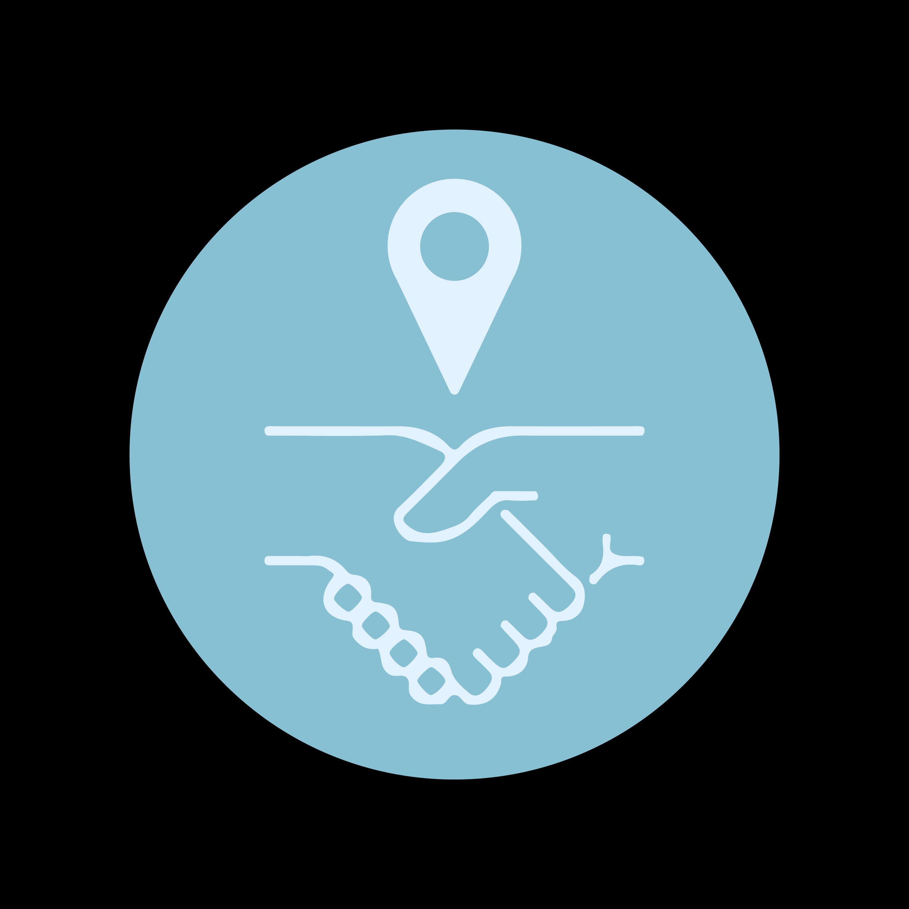
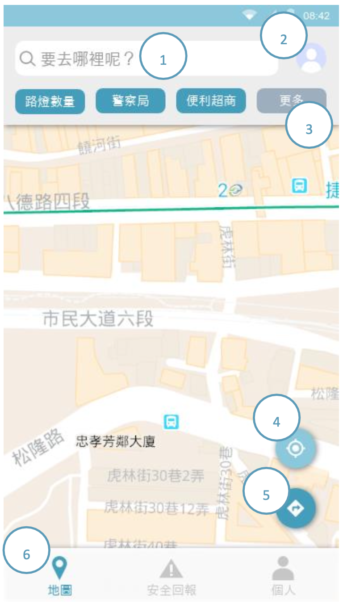

// Let us guide you toward a path of light and warmth
Friendly Maps
YEAR / VENUE
2021 - Young Designers' Exhibition 2020 - Mobile Application Innovation Contest
TECHNOLOGIES
React Native Google Maps API
MY ROLE
User Research / UI/UX Design / Data Collection Interactive Prototyping and
Testing Front-end Implementation
Friendly Maps empowers users to reach their destinations safely and seamlessly, while fostering a
spirit of social mutual aid through a real-time reporting system.
Built upon the robust technological foundation of Google
Maps, Friendly Maps deeply integrates 13 key safety factors—including streetlight distribution, surveillance
camera
locations, and police patrol boxes. This allows users to customize their safety priorities and generate a
personalized "Friendly Route" that provides the highest level of security. Beyond static data application, the app
emphasizes the dynamic energy of social mutual aid. Through a real-time
reporting and reward mechanism, every user becomes an active guardian of community safety.
From personalized safe
navigation and real-time location sharing to emergency SOS recording support, this project does more than just
alleviate the anxiety of those walking home late at night. It demonstrates how technology, through the power of
data sharing, can infuse urban navigation with a deeper sense of warmth, inclusivity, and security.
Problem
Growing up, my mother often reminded me to take the brighter streets when walking home at night. Later, when I
started working part-time, I often returned home late when the streets were quiet and buses ran infrequently. In
those moments, the same advice would always come up: take the main roads, the brighter streets, the “safer”
places.
But this made me wonder: what actually defines a safe place?
Does the number of streetlights really determine whether a place is safe?
While tools like Google Maps provide efficient navigation, they rarely help users understand whether a route is
safe. This uncertainty is not limited to daily commuting. When traveling in unfamiliar cities, people often only
realize that an area feels unsafe after they have already arrived there.
These questions led me to explore how people perceive safety in urban environments and how navigation tools could
better support situations such as walking home late at night or navigating unfamiliar places.
Research
To understand how people perceive safety in urban environments and what features a safety navigation tool should
provide, we conducted user interviews, online surveys, and a competitive analysis of existing navigation
applications.
User Interviews
To understand users' needs regarding safety-oriented navigation, we conducted interviews with participants of
different ages and backgrounds.
The interviews revealed several patterns in how people perceive safety when navigating the city.
Safety is situational
Users expressed stronger concerns about safety when walking home late at night or navigating unfamiliar areas.
Safety perception is multi-factor
Users associate safety with multiple environmental indicators such as lighting, nearby facilities, and
crime-related factors.
Users want to understand how safety is defined
Participants were interested in knowing what factors determine whether a place is considered safe.
Potential users include both pedestrians and drivers
While the project initially focused on pedestrians walking home at night, some participants suggested that
drivers could also benefit from safety-related information.
Competitive Analysis
To understand how safety information is currently represented in map services, we analyzed two types of
platforms: widely used navigation tools such as Google Maps, and safety-oriented map projects such as Taiwan
Midnight Map and Taiwan Risky Road.

Feature
Google Maps
Taiwan Risky Road
Taiwan Midnight Map
Police Taipei
Friendly Map
Route navigation
✓
✗
✗
✗
✓
Safety / risk map
△
△
✓
✓
✓
Data filtering
✓
✗
✗
✓
✓
Community reporting
✓
✗
✗
✓
✓
Safety alerts
△
✗
✗
✗
✓
Our analysis revealed a gap between navigation efficiency and safety awareness in existing map services.
Navigation apps such as Google Maps prioritize efficiency and traffic conditions but rarely provide safety
indicators.
Safety-oriented maps visualize crime or risk data, yet they usually function as information maps rather than
navigation tools.
Users who care about safety often need to switch between multiple platforms to evaluate their routes.
User Survey
► Survey Overview
To better understand how people define safety in urban environments, we conducted an online survey with 159
participants.
The survey explored three aspects:
How people perceive safety factors?
How they obtain safety information?
What features they expect from a safety-oriented navigation app?
► Participants
159 survey responses
Largest group: female 21–25
Main commuting: MRT / bus / walking
80% feel unsafe during late-night travel or in unfamiliar areas
► Safety Factors
The survey explored both the factors users consider important for personal safety and how they prioritize those
factors when choosing a route or evaluating an environment.
Safety Factors Considered Important by Users
Broad Agreement Across Factors: While visibility and connectivity were among the most
frequently selected factors, more than 60% of the safety indicators were chosen by over half of the
respondents.
This suggests that people do not rely on a single signal when evaluating safety. Instead, they consider a
combination of environmental conditions, surrounding facilities, and institutional support when deciding
whether a place feels safe.
"People rely on multiple signals when evaluating urban safety."
To better understand this complexity, the 13 safety factors were further grouped into four broader safety
dimensions.
Safety Factors Identified by Users
Which of the following factors do you consider essential for urban safety?
(Multiple Choice)
Streetlights
118 votes (74.2%)
Environmental Conditions
115 votes (72.3%)
Police Stations
114 votes (71.7%)
Crime Rate
114 votes (71.7%)
Mobile Signal
105 votes (66.0%)
CCTV
104 votes (65.4%)
24H Convenience Stores
95 votes (59.7%)
Road Conditions
82 votes (51.6%)
MRT / Subway Stations
71 votes (44.7%)
24H Fast Food Stores
31 votes (19.5%)
Police Patrol Boxes
30 votes (18.9%)
Pharmacies / Clinics
28 votes (17.6%)
Gas Stations
20 votes (12.6%)
Primary Dimensions of Safety Perception
However, knowing that multiple factors influence safety perception does not explain how users prioritize
them. To better understand this, the 13 factors were grouped into four broader safety dimensions and analyzed
based on users' top priority.
Signals of formal protection and surveillance. Insight:
Institutional presence provides deterrence and reassurance.
Social Presence:
24H Convenience Stores, MRT Stations, 24H Fast Food Restaurants, Pharmacies
The presence of people and active businesses in the environment. Insight:
Social activity increases perceived safety and potential help.
The results show a relatively balanced distribution across the four dimensions. Environmental visibility
leads slightly, but the differences between categories remain small.
This suggests that no single dimension dominates users' perception of safety. Instead, people evaluate safety
through a combination of visibility, institutional protection, social presence, and potential risk.
How Users Prioritize Safety Dimensions
Which single factor do you consider the most important for personal safety?
Environmental Visibility29.4%
Environmental Risk25.5%
Institutional Safety23.5%
Social Presence21.8%
Grouped from 13 original safety factors into 4 broader safety dimensions
Key Insights
Safety perception is multi-dimensional
Users evaluate safety through a combination of environmental visibility, surrounding activity, institutional
presence, and environmental risk.
No universal "safe" route exists
The relatively balanced distribution across the four safety dimensions suggests that what one person
considers a safe path may not feel safe to another, depending on context and individual priorities.
Safety recommendations should be personalized
Because users rely on different signals when assessing safety, route recommendations should adapt to
individual safety preferences rather than rely on fixed rules — leading to the design of a customizable
safety filter.
► Safety Information Sources
Most participants obtain safety information through news media
(46.2%), followed by personal experience (26.9%)
and word-of-mouth (25.6%) from friends or acquaintances.
This suggests that people often rely on curated or socially shared information rather than actively searching
for
location-specific safety data.
Because personal experience and social networks are typically limited to familiar areas, users may struggle to
quickly assess safety conditions when navigating unfamiliar environments.
Key Insights
Safety knowledge is local
People rely heavily on personal experience and social networks to evaluate safety. When entering unfamiliar
environments, this knowledge disappears.
Safety Information is Hard to Access
Users primarily rely on news media, personal experience, and word-of-mouth to understand safety conditions.
This indicates a lack of accessible, location-based tools that help people quickly evaluate safety in
unfamiliar areas.
► Expected App Features
Most Expected Features
Across responses, four feature types appeared most consistently:
Safe route filtering and navigation
Real-time safety notifications
User-generated safety reports
Route / live location sharing
These responses suggest that users wanted a tool that could help them make safer decisions in real time, rather
than simply display safety-related information.
Participation Motivation
Because several of these features rely on community input, users' willingness to contribute information became an
important design consideration.
Responses revealed both intrinsic and extrinsic motivations. Some participants were motivated by the idea of
helping others and improving society, while others responded positively to reward systems, points, prizes, and
gamified interaction. At the same time, several responses also raised concerns about privacy and personal data
protection.
Key Insights
Safety Support Must Be Action-Oriented
Users prioritized features such as safe route navigation, real-time alerts, and live location sharing,
indicating that safety tools should support immediate decision-making, not just display information.
Safety Systems Depend on Community Participation
Many expected features rely on user-generated safety information.
This suggests that effective safety platforms must encourage community contributions while protecting user
privacy.
Persona
Design Objectives and Core Values
Safety First
The core objective is to help users avoid emergencies and potential hazards by providing multiple channels for
real-time information on critical road conditions, ensuring a safe arrival at their destination.
Social Mutual Aid
Through a real-time road reporting mechanism, we encourage users to share information—protecting themselves
while assisting others—to realize a vision of community support and social mutual aid.
Need Fulfillment
Beyond navigation and safety, the app addresses the finer details of daily life, such as locating public
restrooms and trash cans, providing a comprehensive suite of environmental information services.
Interface
The system operates in four key stages:
1. Search Bar
Enter the destination to initiate seamless route planning.
2. User Profile
Access the personal dashboard to view user level, and contribution history.
3. Safety Factor Filter
Customize and prioritize safety elements (e.g., streetlights, surveillance) to
generate a personalized secure route.
4. Current Location Indicator
5. Navigation System
Activates visual route guidance, directing users through optimized paths while avoiding high-risk areas.
6. Navigation Bar

Project Demo
// Reflections
"Technology is not neutral — it reflects whose experiences are considered and whose are overlooked."
Through this project, I realized that design begins with listening. What seemed like a simple navigation problem
was, in fact, about fear, trust, and lived experience. Friendly Maps taught me that meaningful technology does
not only optimize efficiency—it acknowledges vulnerability. By translating personal concern into a data-driven
system, I learned how design can bridge individual emotion and collective infrastructure. This insight continues
to shape my approach to human-centered technology.